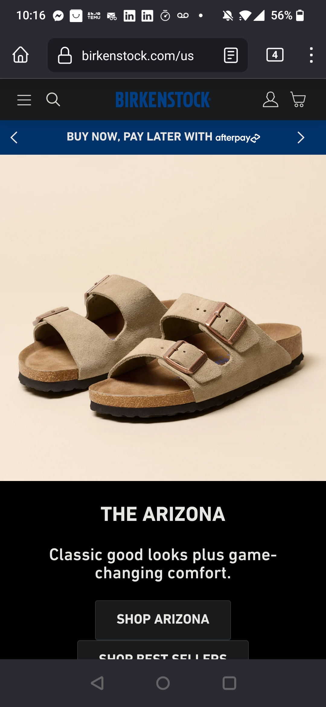
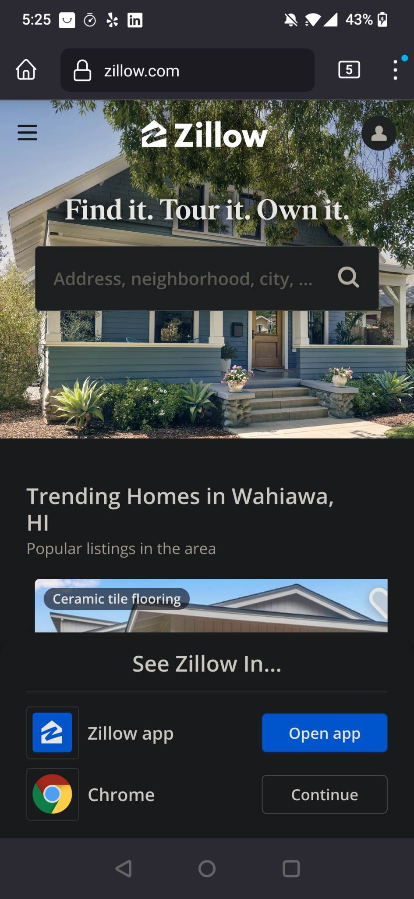

Repitition
Hacker.io
In the Hacker.io screenshot this website shows the principle of repetition on the courses links and it makes it understandable and related.
Visual Hierarchy
Birkenstock The Birkenstock website demonstrates effective visual hierarchy by drawing our attention first to the brand name, followed by the opening announcement, and finally leading us to the call-to-action button. This approach guides the user towards the desired conversions on the site.
Contrast
zillow On the zillow website, I observed the skillful application of the contrast principle in the grouping of background and typography colors, as well as in the variation of font weights.